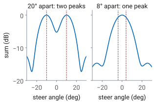
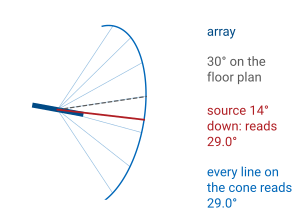
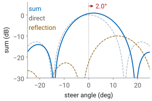
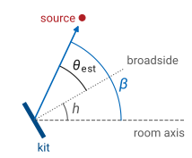
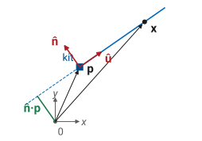
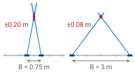
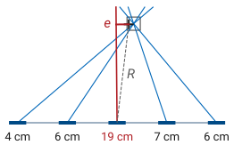

L19 - Direction Finding#
Direction Finding
An array measures the direction a signal comes from, and bearings from known places locate the transmitter.
Lesson 19 · Antennas, Phased Arrays, and Radar Systems · Dr. Neil Rogers
Printing
To print the slides, switch to present mode and print: one slide a sheet, with room for notes. Print from read mode for the whole lesson.
Learning Objectives
- I can implement beam steering on the ADALM-PHASER and verify the steered pattern against theory.
L18 worked out the phase each element needs to point the beam at a commanded angle, and the L18 Lab checked the steered pattern against that prediction. This lesson runs the same physics in the other direction. The transmitter is somewhere we do not know, and the array has to tell us which way it is. We start from the phase ramp an arriving wave puts across the array, show why sweeping the beam finds that ramp, work out how accurately the peak of the sweep gives the direction, and then combine directions measured from two or more known places into a position. The L19 Lab uses all of it to find one live HB100 among several boxes.
Finding a Transmitter
Direction finding locates a transmitter from its own signal.
One array measures a bearing: the direction the wave arrives from.
A passive receiver has no echo delay to give range.
Bearings from two known positions cross at the transmitter.
Direction finding is the problem of locating a transmitter from the signal it emits: a radio beacon, a jammer, a lost aircraft’s emergency locator, or, in the L19 Lab, an HB100 hidden in a box. We do not control the transmitter, and we do not know its power or its antenna pattern. The one thing we can measure reliably is the direction its wave comes from, because that direction sets the times at which the wave reaches each element of an array.
A direction measured from one place is a bearing. A bearing alone says which way to look but not how far. A radar gets range from the delay of its own echo, but a direction finder only listens, so there is no delay to measure. The received power does not give range either, since it depends on the transmitter’s power and pattern, which are unknown. Distance comes instead from geometry: two bearings taken from two known positions cross at the transmitter. The first half of this lesson measures a bearing; the second half turns bearings into a position.
The Arrival Ramp
A wave from \(\theta_s\) reaches element \(n\) with phase \(n\ kd\sin\theta_s\) relative to element 0.
The bearing is in that ramp: \(\sin\theta_s = \Delta\phi_s/kd\).
The PHASER sums the eight elements, so we cannot read the ramp directly.

L18 started from this picture. A plane wave arriving from \(\theta_s\), measured from broadside, travels an extra \(d\sin\theta_s\) to reach each successive element, so neighboring elements see the wave with a phase difference of \(kd\sin\theta_s\), and element \(n\) sees it \(n\ kd\sin\theta_s\) ahead of element 0. In L18 we chose the steer angle and computed the ramp to command. Here the source chooses the ramp, and the source’s direction is the unknown.
If we could measure the phase on each element, the bearing would follow from L18’s inverse problem: difference neighboring phases, unwrap, and take
Some direction finders work this way. They are interferometers: two or more antennas, each with its own receiver, and a direct phase comparison between them. The PHASER cannot do it with eight elements, because the two ADAR1000s add their four elements each into one channel before anything is digitized (L17, “The Hybrid Beamformer”). The individual element phases never reach the computer. What reaches it is a sum, and the sum depends on the phase we command.
The Steered Sum
Steer to \(\theta_0\): each delay takes away \(n\ kd\sin\theta_0\).
The sum is L16’s \(\vert AF_N(\psi)\vert\), largest at \(\psi = 0\).
So the sum peaks when \(\theta_0 = \theta_s\).

Steer the array to \(\theta_0\) and each element’s phase shifter delays its signal by \(n\ kd\sin\theta_0\). The arriving wave put a lead of \(n\ kd\sin\theta_s\) on element \(n\), so what is left on element \(n\) after the delay is \(n\psi\), with
The eight signals then add to \(\vert AF_N(\psi)\vert\), the array factor from L16 with \(\psi\) in place of its argument. It is largest, 1 after normalizing, at \(\psi = 0\), where the commanded delays exactly cancel the arrival lead and all eight signals add in phase. Any other steer angle leaves a residual ramp, and the sum falls off along the main lobe, through its nulls, and over the sidelobes.
The beam sweep steps \(\theta_0\) across the field of view and records the sum at each step. The figure shows what it records for a source at 30°: the curve is the array pattern, centered on the source. This is the same function the L18 Lab measured, read the other way, and the curve L16 drew with the grid and the noise floor in “The Measured Sweep”. There the source sat still and the curve showed where the beam pointed; here the beam moves and the peak shows where the source is.
Key Point
The sweep tries every phase ramp the hardware can set. The ramp that cancels the arrival ramp gives the largest sum, so the steer angle at the peak is the bearing: the GUI’s Angle readout, set to Peak.
Accuracy and Resolution
The main lobe is 12.9° wide, but the sweep locates its peak far more finely.
Noise moves the peak about 0.3° at 30 dB SNR.
Two sources closer than about 15° merge into one lobe.

At 10.525 GHz, \(\lambda = 28.5\ \text{mm}\) and the array’s half-power beamwidth at broadside is
It is tempting to conclude that a bearing is only good to about 13°, but the beamwidth limits something else. Finding the peak of one smooth lobe is a location estimate, and how much noise jitters the curve sets its precision, not how wide the curve is. The standard estimate for a beam that scans across a source is
The lobe’s slope sets it. Noise adds a random voltage to every sample of the sweep, about \(1/\sqrt{2\ \text{SNR}}\) of the peak voltage, and the slope of the lobe turns that voltage error into an angle error:
The constant \(k\) is that slope in units of \(1/\theta_\text{HP}\). Textbook trackers quote \(k \approx 1.6\); the course array’s lobe, normalized to 1 at its peak, has a slope of \(1.05/\theta_\text{HP}\) at its half-power points. With the array’s own slope, an SNR of 30 dB (a factor of 1000) gives
and the textbook constant gives 0.2°. Either way the noise term is a fraction of the 1.05° grid step at 30° (next frame). An HB100 two meters away is tens of decibels above the noise, so noise is not what limits the bearing.
The beamwidth sets resolution: the ability to tell two sources apart. Two sources closer than about one beamwidth produce lobes that overlap into a single peak somewhere between them, and the sweep reports one wrong bearing instead of two right ones. The figure shows both cases for two equal sources: 20° apart the sweep has two peaks with a dip between them, and 8° apart it has one peak midway between the sources. For the course array the first null sits \(\lambda/Nd = 0.254\) away in \(\sin\theta\), 14.7° at broadside, which is the usual measure of the separation two sources need. Only one HB100 is on during the fox hunt, so the sweep sees one source.
The Sweep Grid
One step is 0.91° at broadside, 1.05° at 30°, 1.29° at 45°.
The Angle readout is off by up to half a step: 0.53° at 30°.

The sweep cannot set any steer angle it likes. The ADAR1000’s phase shifters have 7 bits, so the progressive phase moves in whole steps of \(360^\circ/128 = 2.8125^\circ\) (L18, “Phase-Shifter Resolution”). At the HB100’s frequency, \(kd = 176.8^\circ\), so one step of progressive phase moves the beam by a fixed 0.0159 in \(\sin\theta\). The same step in \(\sin\theta\) is a larger step in angle away from broadside, by the factor \(1/\cos\theta\) in the slide’s second line, the same stretching that broadens the steered beam in L18.
The Angle readout is the steer angle of the largest sample, so it can only land on the grid. Unless the source happens to sit on a grid point, the reported angle is the nearest one, off by up to half a step. In the figure the source is at 30.0° and Angle reads 29.5°. This is one reason to prefer a source within about ±30° of broadside: the grid step and the beamwidth grow as \(1/\cos\theta\), and the gain falls as \(\cos\theta\) (L18, “Scan Loss”). At 45° the step is 1.29° and the beam is about 18° wide, and 45° is where the PHASER starts to lose tracking.
The Cone Angle
The ramp sees only the part of the arrival direction \(\hat{\mathbf u}\) along the element row \(\hat{\mathbf x}\).
A source below the array shortens that part by \(\cos(\text{el})\).
30° azimuth, 14.0° down, reads 29.0°.

The phase ramp depends only on the extra path between neighboring elements, and that path is \(d\) times the component of the arrival direction along the line of elements. Put \(\hat{\mathbf x}\) along the element row, \(\hat{\mathbf y}\) along broadside, and \(\hat{\mathbf z}\) up. A unit vector \(\hat{\mathbf u}\) toward a source at azimuth az, measured from broadside in the horizontal plane, and elevation el has a horizontal part of length \(\cos(\text{el})\), the adjacent side of the elevation angle, and a vertical part \(\sin(\text{el})\). The horizontal part splits into \(\cos(\text{el})\sin(\text{az})\) along the row and \(\cos(\text{el})\cos(\text{az})\) along broadside. In L18 the source was in the horizontal plane and the component along the row was \(\sin\theta_s\); here it is
That is where the cosine comes from: tipping the arrival direction out of the horizontal plane shortens its projection onto the row. Every direction on a cone around the row has the same projection, and so the same reading, which is why a line array measures a cone angle and not a floor-plan azimuth.
When the source is at the array’s height, el is zero and the two angles agree. A box on the floor 0.75 m below a tabletop kit at 3 m is 14.0° down, and a source at 30° azimuth reads 29.0°; at 45° it reads 43.3°. The error always pulls the bearing toward broadside. The L19 Lab’s range is set up with the kits and the boxes at one height, so el is near zero there. What the kit’s position on its stand does change is the row itself: tipping the board up or down to aim it at the boxes turns it about the row and leaves the reading alone, but raising one end of the row tilts the cone and adds the same kind of error. Keep the row level.
The cone has a back half as well, a source behind the array at the mirror angle, but the PHASER’s patches sit over a ground plane and receive almost nothing from behind, so a bearing is always in front of the array.
Reflections
A reflection adds a second, weaker lobe.
Within 15° of the source it pulls the peak: 0.6° at −20 dB, 2.0° at −10 dB, 3.2° at −6 dB.
A bearing far off the rest is usually a reflection: clear the path.

A whiteboard, a metal cabinet, or a person near the line of sight sends a second copy of the signal toward the array from a different direction. The array adds both, so the sweep is the sum of two patterns, one centered on the source and a weaker one centered on the reflector, with a relative phase set by the extra path the reflection travels. When the two directions are within about a beamwidth of each other, the lobes merge and the peak moves toward the reflection. The worst case over every phase, for a reflection 5° to 15° from the direct path, is a shift of 0.6° for a reflection 20 dB down, 2.0° at 10 dB down, and 3.2° at 6 dB down. The figure shows the −10 dB case at its worst, a reflection about 12° from the direct path.
A reflection more than about 20° away forms its own lobe and moves the main peak much less. It takes over the bearing if someone stands between the kit and the source: the direct lobe drops, the reflection’s lobe is now the largest, and Angle reports the direction of the whiteboard. A bearing several degrees off from the others most often comes from a reflection that has taken over the peak.
From Array Angle to Room Bearing
\(\theta_\text{est}\): Angle, from the kit’s broadside.
\(h\): the heading of broadside from a fixed room axis.
\(\beta\): the room bearing. All three counterclockwise, seen from above.

The Angle readout measures the angle from the array’s broadside, which is wherever the kit happens to face. To draw the bearing on a floor plan we need it in the room’s frame. Measure angles counterclockwise from a fixed room axis, seen from above. If broadside points along heading \(h\) and positive Angle is the counterclockwise side, the room bearing is
Which physical side of the kit is positive depends on which way the kit faces; the L18 Lab found it by moving the source toward element E8. Get it wrong and a source at 30° lands on the plan at −30°, a 60° error, so check it with one shot at a known position before trusting any bearing.
The Bearing Error Budget
Error |
Enters through |
Source |
\(\sigma\) |
|---|---|---|---|
heading |
\(h\) |
array edge on a taped line |
1.0° |
grid |
\(\theta_\text{est}\) |
half a step at 30° |
0.53° |
multipath |
\(\theta_\text{est}\) |
a weak reflection |
1.0° |
noise |
\(\theta_\text{est}\) |
30 dB SNR |
0.3° |
Each term of \(\beta = h + \theta_\text{est}\) carries an error, and the error in \(\beta\) is the two combined. The table is the budget for one bearing: one row per independent error, the term of the equation it enters through, where it comes from, and its one-sigma size. The heading error adds directly to the bearing error, and in the room it is the largest term. Laying the array’s edge along a taped line holds \(h\) to about 1°. The grid term is the worst case, half a step, rather than the 0.30° standard deviation of an error spread evenly over a 1.05° step, which keeps the budget conservative. The grid, multipath, and noise terms make up \(\sigma_\theta\), the error in the Angle readout itself, and all four are independent, so they add as a root sum of squares, the chain on the slide. Setting the heading by eye, about 3°, raises the total to 3.2°.
The Bearing Line
\(\mathbf p\): kit position. \(\hat{\mathbf u}\): unit vector toward the source.
\(\hat{\mathbf n}\): \(\hat{\mathbf u}\) turned 90° counterclockwise.
Every \(\mathbf x\) on the line lies \(\hat{\mathbf n}\cdot\mathbf p\) from the origin along \(\hat{\mathbf n}\).

Positions are vectors from an origin, any fixed point of the room, with the room axis as \(x\) and \(y\) counterclockwise from it. A bearing \(\beta\) measured from a kit at a known position \(\mathbf p\) says the source lies somewhere along the ray \(\mathbf p + r\hat{\mathbf u}\), with \(r\) unknown and positive. The unit vector \(\hat{\mathbf u} = (\cos\beta,\ \sin\beta)\) points along the bearing, and \(\hat{\mathbf n} = (-\sin\beta,\ \cos\beta)\) is the same vector turned 90° counterclockwise. For computing a crossing it is easier to describe the line by its normal. Moving along the line moves only along \(\hat{\mathbf u}\), which never changes the component of position along \(\hat{\mathbf n}\). In the figure, that component is the length of the green segment, the line’s distance from the origin, and every point \(\mathbf x\) on the line satisfies one linear equation,
One equation in two unknowns, the source’s \(x\) and \(y\), leaves a line of solutions, which is the statement that one bearing gives no range. A second bearing from a different position supplies a second equation, and two independent linear equations in two unknowns have one solution: the crossing.
A Two-Bearing Fix
Origin at the middle of the tape: \(x\) along it, \(y\) downrange.
\(\theta_i\) is positive toward \(+x\).

On the L19 Lab’s firing range every station faces straight downrange, so all the stations share one heading and the bearing line takes a simpler form. Put the origin at the middle of the tape, the station 0 mark, with \(x\) along the tape and \(y\) downrange, and take Angle \(\theta\) positive toward the \(+x\) end of the tape. A station at \(x_i\) sits at \((x_i,\ 0)\) and faces \(+y\). A source at \((x,\ y)\) is \(y\) downrange of it and \(x - x_i\) across, the two legs of the dotted right triangle in the figure, and \(\theta_i\) is the angle at the station between downrange and the source, so
Solving for \(x\), a reading \(\theta_i\) at station \(x_i\) puts the source on the line
This is the bearing line of the previous frame with \(h = 90^\circ\) and \(\beta = 90^\circ - \theta_i\); the sign flips because positive Angle turns clockwise, toward \(+x\), seen from above.
Worked example — the crossing of two bearings
Station A at \(x_A = -1.0\ \text{m}\) reads Angle 36.6°, and station B at \(x_B = +1.0\ \text{m}\) reads −22.4°. Both lines pass through the source, so setting their \(x\) equal, \(x_A + y\tan\theta_A = x_B + y\tan\theta_B\), and solving for \(y\) gives
and either line gives \(x\):
The box was at \((0.25,\ 1.75)\ \text{m}\), where the true angles are 35.5° and −23.2°. The readings were 1.1° and 0.8° toward \(+x\), inside the 1.5° budget, and the fix lands 0.04 m from the box. The two lines cross at \(\gamma = \theta_A - \theta_B = 59.0^\circ\).
Many Bearings: Least Squares
\(\mathbf p_i\): station \(i\)’s position. \(\hat{\mathbf n}_i = (-\sin\beta_i,\ \cos\beta_i)\): the unit normal to its bearing line.
On the firing line, \(\hat{\mathbf n}_i = (-\cos\theta_i,\ \sin\theta_i)\).
The fix \(\mathbf x\) is closest to every line: one \(2\times 2\) solve.
With two bearings the crossing is exact. A third bearing adds a third line, and because every bearing carries some error, the three lines form a small triangle rather than meeting at a point. The usual fix is the point closest to all of them. The perpendicular distance from a point \(\mathbf x\) to line \(i\) is
and minimizing \(\sum_i e_i^2\) means setting its gradient with respect to \(\mathbf x\) to zero. Each \(e_i\) grows at unit rate along \(\hat{\mathbf n}_i\), so
Because \(\hat{\mathbf n}_i(\hat{\mathbf n}_i\cdot\mathbf x)\) is
\(\hat{\mathbf n}_i\hat{\mathbf n}_i^{\mathsf T}\mathbf x\), this rearranges to the
normal equations on the slide: a \(2\times 2\) matrix built from the normals,
times \(\mathbf x\), equals a 2-vector built from the normals and the kit
positions. One call to numpy.linalg.solve returns the fix. For two bearings it
reproduces the crossing of the worked example exactly; for more, it is the least-squares
compromise. The L19 Lab’s pre-lab has you write this as a short Python
function and test it on a supplied set of bearings.
Each \(\hat{\mathbf n}_i\) is the normal of “The Bearing Line”, one per station: \(\hat{\mathbf n}_i = (-\sin\beta_i,\ \cos\beta_i)\) for room bearing \(\beta_i\). On the firing line every kit faces \(+y\) and \(\beta_i = 90^\circ - \theta_i\), so \(\hat{\mathbf n}_i = (-\cos\theta_i,\ \sin\theta_i)\), and with \(\mathbf p_i = (x_i,\ 0)\) the right-hand side’s scalar is \(\hat{\mathbf n}_i\cdot\mathbf p_i = -x_i\cos\theta_i\).
Unweighted least squares treats every line as equally reliable. A bearing from a kit far from the source is less reliable in meters, as the next frame shows, so if the ranges differ a lot, weighting each term by \(1/r_i^2\) gives the better fix. In the fox hunt every bearing that counts is within about ±45° of broadside, so the ranges from the stations to one box differ by at most a factor of \(\sqrt{2}\), the weights by a factor of 2, and the unweighted form is close enough.
A Three-Bearing Fix
\(i\) |
1 |
2 |
3 |
|---|---|---|---|
\(x_i\) (m) |
−0.75 |
0 |
+0.75 |
\(\theta_i\) |
34.6° |
8.8° |
−17.7° |
\(\hat n_{i,x}\) |
−0.823 |
−0.988 |
−0.953 |
\(\hat n_{i,y}\) |
0.568 |
0.153 |
−0.304 |
\(\hat{\mathbf n}_i\cdot\mathbf p_i\) |
0.617 |
0 |
−0.714 |
The box is at \((0.25,\ 1.50)\ \text{m}\): 0.01 m away.
Stations at \(x_i = -0.75\), 0, and +0.75 m read Angle 34.6°, 8.8°, and −17.7°. Each column of the table is one station: its normal \(\hat{\mathbf n}_i = (-\cos\theta_i,\ \sin\theta_i)\), as its \(x\) and \(y\) components, and the scalar \(\hat{\mathbf n}_i\cdot\mathbf p_i = -x_i\cos\theta_i\).
Summing \(\hat{\mathbf n}_i\hat{\mathbf n}_i^{\mathsf T}\) over the rows, and \(\hat{\mathbf n}_i\) times its scalar, gives the normal equations \(\mathbf M\mathbf x = \mathbf b\),
The determinant is \(2.562 \times 0.438 - 0.329^2 = 1.014\), and the \(2\times 2\) inverse gives
The box was at \((0.25,\ 1.50)\ \text{m}\), so the fix lands 0.01 m
from it. The residuals, \(\hat{\mathbf n}_i\cdot\mathbf x - \hat{\mathbf n}_i\cdot\mathbf p_i\),
are 0.016, −0.028, and 0.015 m, all under each station’s own
\(R_i\tan\sigma_\beta\) of about 0.04 m at 1.5°: three good
bearings (the check in “Residuals and Outliers” below). numpy.linalg.solve does the same
arithmetic in one line.
Cross-Range Error
At \(\sigma_\beta = 2^\circ\) the line moves 0.03 m at 1 m, 0.07 m at 2 m, 0.14 m at 4 m.
A bearing constrains the source across its line, not along it.
A bearing error is an angle, but the fix is a position, so what matters is how far the error moves the line where the source is. A line rotated by \(\sigma_\beta\) about the kit moves sideways, at range \(R\), by
At \(\sigma_\beta = 2^\circ\), a little worse than the taped-heading budget, that is 0.03 m at 1 m, 0.07 m at 2 m, and 0.14 m at 4 m. The error grows in proportion to range, which is why a closer station gives a tighter line.
The error is all in one direction. A bearing says nothing about how far along the line the source is, so its uncertainty is a narrow strip, \(2\delta_\perp\) wide at one standard deviation and unbounded along its length. The second bearing’s strip is what limits the fix along the first one, and how well it does that depends on the angle between them.
The Crossing Angle
A shallow crossing stretches the error region as \(1/\sin\gamma\): 0.20 m at 90°, 0.76 m at 15°.
A reflection moves the fix, and only a third bearing shows it.
Where the two strips overlap is where the source can be. When the lines cross at 90°, each strip limits the other’s long direction, and the overlap is a small square; its error ellipse is a circle of radius \(\delta_\perp\) in both directions. When they cross at a shallow angle \(\gamma\), the strips run almost parallel, and the overlap stretches into a long diamond along the bisector of the two lines.
The least-squares fix puts a number on this. Weight each bearing’s term in the normal equations by \(1/\delta_\perp^2\), and the matrix
describes the error region. The eigenvectors of \(\mathbf M^{-1}\) point along the axes of the one-sigma error ellipse, its eigenvalues are the squared semi-axes, and the RMS error of the fix is the square root of their sum. Two unit normals at an angle \(\gamma\) give \(\sum\hat{\mathbf n}_i\hat{\mathbf n}_i^{\mathsf T}\) a trace of 2 and a determinant of \(\sin^2\gamma\), so its eigenvalues are \(1 + \cos\gamma\) and \(1 - \cos\gamma\). For two bearings with the same \(\delta_\perp\),
so a 15° crossing is almost four times worse than a 90° one with the same bearings.

Kits 4 m out, \(\sigma_\beta = 2^\circ\) |
RMS fix error |
|---|---|
2 kits, 90° crossing |
0.20 m |
2 kits, 30° |
0.40 m |
2 kits, 15° |
0.76 m |
3 kits over 120° |
0.16 m |
The table’s rows come from the same \(\mathbf M\), summed over two or three kits. A third kit helps less by adding a measurement than by guaranteeing that at least two of the three lines cross steeply: three kits spread over 120° do better than the best pair.
The widget is a room seen from above, with the keep-out circle and a source hidden somewhere inside it. Each kit draws its measured bearing, the true bearing plus an error drawn with the \(\sigma_\beta\) you set, and a shaded wedge of \(\pm\sigma_\beta\). The cross is the least-squares fix and the ellipse around it is its one-sigma error region. Drag the kits and watch the ellipse: it stays round while the crossing angle \(\gamma\) is near 90° and stretches along the bisector as \(\gamma\) closes. To reproduce a row of the table, tick reveal, set \(\sigma_\beta\) to 2°, and drag the kits onto the 4 m ring, where they snap at 5° steps around the source. The RMS beside the fix error is the table’s number. The fix error itself is one draw of the bearing errors; press new bearings a few times and it scatters about the RMS. With the source hidden, the crossing angles and the RMS come from the measured bearings, as they would in the room.
Tick reflection to bend kit A’s bearing by 10°, the size of error a reflection makes when it takes over the peak. With two kits the fix moves about 0.7 m and both residuals stay at zero, because two lines always meet. With three, A and C both miss the fix by about twice their own \(R_i\tan\sigma_\beta\) and turn red: the residuals show that a bearing is bad, but with three lines they rise and fall together and cannot say which. A fourth kit separates them, and only A’s residual stands out. That is the check in “Residuals and Outliers” below.
Set Layout to firing line to see the L19 Lab’s range: a 3 m tape with five station marks 0.75 m apart, every kit facing straight downrange, and the source hidden in the box field 1 to 2 m out. Kits snap to the marks. The fix-error readout now splits into depth and cross-range. Put two kits on the inner marks, then move them to the ends: the ellipse shortens downrange and the depth error falls as \(1/B\), the result derived in “Choosing Where to Measure” below.
Choosing Where to Measure
Use the end stations that hear the fox: depth error falls as \(1/B\).
Best within ±30° of broadside; tracking starts to fail at ±45°.
Point each array at the boxes, path clear.
Take a third bearing as a check.

Choosing where to stand is part of the measurement, because the geometry sets the error as much as the instrument does. On a firing line every bearing looks downrange, so the lines cross steeply only when the stations are far apart compared with the depth, and depth is the direction the fix measures worst.
Take two stations a baseline \(B\) apart and a box midway between them at depth \(y\), a range \(R\) from each. Each line moves sideways by \(\delta_\perp = R\sigma_\beta\), with \(\sigma_\beta\) in radians, and the two lines cross at \(\gamma\), with
The two lines sit symmetrically about the downrange direction, so the axes of the error ellipse point across and down range. The eigenvalues of \(\mathbf M\) are \(2\cos^2(\gamma/2)/\delta_\perp^2\) across range and \(2\sin^2(\gamma/2)/\delta_\perp^2\) in depth, and the depth error is the inverse square root of the second:
With the taped-heading budget, \(\sigma_\beta = 1.5^\circ\), and the L19 Lab’s station marks 0.75 m apart, the end stations, 3 m apart, fix a box 2 m downrange to 0.08 m in depth, stations 1.5 m apart to 0.11 m, and neighboring stations, 0.75 m apart, to 0.20 m. Across range the same pairs fix it to 0.04 to 0.06 m. The depth error grows as \(R^2\) and falls as \(1/B\), so the stations farthest apart that still hear the fox give the best fix.
Spreading the stations has a limit: a station far to one side sees the box well off broadside. Within ±30° the grid step and the beamwidth stay near their broadside values. At ±45° the step is 1.29°, the beam is about 18° wide, the gain is 1.5 dB down (L18, “Scan Loss”), and the PHASER starts to lose tracking. A station that sees a box farther out than that gives no bearing worth using, and the HB100’s own beam, aimed only roughly at the line, may leave it too weak a tone to read anyway.
Two systematic errors from earlier in the lesson remain. The cone-angle error pulls every bearing toward broadside when the source is above or below the array; the range is set up with kits and boxes at one height to remove it, and pointing each array at the boxes with its element row level keeps it removed. A reflector near the line of sight shifts the peak or replaces it, so keep the path from each kit to the box field clear, people included. Finally, two bearings always cross somewhere, right or wrong. A third bearing is the only check that the first two are consistent.
The geometry also sets how close two boxes can be and still be told apart. A simulation of a row of boxes, with the fix assigned to the nearest box, names the right one 99% of the time at 0.75 m spacing with two kits 4 m out crossing at 90° and \(\sigma_\beta = 2^\circ\), and 93% of the time at 0.5 m. The L19 Lab’s boxes sit at least 0.75 m apart for the same reason.
Residuals and Outliers
At the fix \((x,\ y)\): \(R_i\) is station \(i\)’s range, \(e_i\) how far the fix sits off line \(i\).
\(\lvert e_i\rvert > 3R_i\tan\sigma_\beta\) flags a bad bearing: retake it, or drop it and solve again.

Once the least-squares fix \(\mathbf x = (x,\ y)\) is in hand, the perpendicular distance from the fix to each line is that line’s residual, \(e_i\). It is the same \(\hat{\mathbf n}_i\cdot(\mathbf x - \mathbf p_i)\) the least-squares frame minimized, now evaluated at the answer. On the firing line station \(i\) sits at \(\mathbf p_i = (x_i,\ 0)\) and its normal is \(\hat{\mathbf n}_i = (-\cos\theta_i,\ \sin\theta_i)\), which gives the second form on the slide, one line of Python per station. On the line itself \(x - x_i = y\tan\theta_i\) and \(e_i\) is zero.
To judge a residual, compare it with what that bearing’s own error would produce. \(R_i\) is the distance from station \(i\) to the fix, and a bearing error of \(\sigma_\beta\) moves line \(i\) sideways at the fix by \(R_i\tan\sigma_\beta\), the cross-range error of “Cross-Range Error” above: about 0.05 m for a station 1.5 m from the fox at \(\sigma_\beta = 2^\circ\). A good bearing’s residual is about that size. One more than three times that size says the bearing disagrees with the rest.
What to do with it is the procedure on the slide: solve the fix from every bearing, compute \(R_i\) and \(e_i\) for each station, and flag any station whose \(\lvert e_i\rvert\) is more than \(3R_i\tan\sigma_\beta\).
The usual causes are the two errors that the budget does not cover because they are blunders rather than noise: a reflection that took over the peak, and a heading or sign mistake that put the line on the wrong side of broadside. Check that kit’s setup and retake the bearing; if it still disagrees, drop it and solve again with the others. Drop one at a time, the worst first, because one bad line pulls the fix and raises every other residual a little. In the figure the middle station’s bearing is 10° off: its residual \(e\) is 19 cm against its own \(R_i\tan\sigma_\beta\) of 5 cm, almost four times, and the bad line pulls the other residuals up to 4 to 7 cm, each under one and a half times its own. With only two bearings the residuals are always zero, because two lines always meet exactly, so two bearings cannot check each other.
The L19 Lab adds one more check, the Peak Gain readout. Received power cannot give range on its own, because the transmitter’s power is unknown, but every station hears the same transmitter, so comparing levels between stations removes that unknown. Free-space spreading then sets the difference: a station at range \(R_2\) reads \(20\log_{10}(R_2/R_1)\) dB below one at \(R_1\), which is 2.5 dB for 2.0 m against 1.5 m, and a source off broadside reads lower by the scan loss of L18. The HB100’s own pattern does not cancel: the fox points only roughly at the line, and two stations at the same range can differ by several decibels. Levels therefore rank the two or three boxes the bearings already put near the fix; they do not locate the fox by themselves.
Summary: Measuring a Bearing
Symbol / idea |
What it is |
Number to remember |
|---|---|---|
\(\psi = kd(\sin\theta_s - \sin\theta_0)\) |
residual phase step after steering to \(\theta_0\) |
sum peaks where \(\theta_0 = \theta_s\) |
Angle |
steer angle of the largest sample in the sweep |
on a grid 0.0159 apart in \(\sin\theta\) |
\(\theta_\text{HP}\) |
sets resolution of two sources, not accuracy for one |
12.9° at broadside |
\(\sin\theta_\text{meas} = \sin(\text{az})\cos(\text{el})\) |
the cone angle a line array measures |
29.0° for 30° at 14° down |
\(\beta = h + \theta_\text{est}\) |
room bearing from heading and Angle |
\(\sigma_\beta \approx 1.5^\circ\) with a taped heading |
Summary: Locating the Source
Symbol / idea |
What it is |
Number to remember |
|---|---|---|
\(\hat{\mathbf n}\cdot\mathbf x = \hat{\mathbf n}\cdot\mathbf p\) |
one bearing line |
one equation, two unknowns |
\(\left(\sum \hat{\mathbf n}_i\hat{\mathbf n}_i^{\mathsf T}\right)\mathbf x = \sum \hat{\mathbf n}_i(\hat{\mathbf n}_i\cdot\mathbf p_i)\) |
least-squares fix |
a \(2\times 2\) solve |
\(\delta_\perp = R\tan\sigma_\beta\) |
cross-range error of one line |
0.14 m at 4 m, 2° |
\(\sigma_\text{fix} = \sqrt{2}\ \delta_\perp/\sin\gamma\) |
RMS error of a two-bearing fix crossing at \(\gamma\) |
0.20 m at 90°, 0.76 m at 15° |
\(\sigma_y = \sqrt{2}\ R^2\sigma_\beta/B\) |
depth error from two stations \(B\) apart on a firing line |
0.08 m at 2 m deep, \(B = 3\ \text{m}\) |
residual \(e_i\) |
the fix’s perpendicular distance from line \(i\) |
flags an outlier above \(3R_i\tan\sigma_\beta\) |
The L19 Lab
The bench half of this lesson is the L19 Lab, the fox hunt: find the one live HB100 among numbered boxes from bearings your team takes at stations along a firing line.
Pre-Lab
The L19 Lab’s pre-lab is Part 1 of its packet, one per team, done before the lab period. It works this lesson’s error budget for the range and has you write the fox-hunt script: start from the starter file, write its four functions, and test it on the supplied bearings. Bring the tested script to the lab on your laptop.
Looking Ahead
In the L19 Lab, one kit takes a bearing from each station on a taped firing line.
Bring your tested script from the Pre-Lab.
L20 returns to shaping and steering the beam.
In the L19 Lab you and a partner find the one live HB100 among the numbered boxes. You move one kit along a taped firing line, square to the tape at every station, read Angle off the beam sweep at each station mark, convert it to a room bearing, and solve for the fix. Come with the Pre-Lab script, tested.
The rest of Module 3 returns to the pattern the sweep traces. L20 measures beamwidth against element count, L21 separates the array factor from the element pattern, L22 trades sidelobe level for beamwidth with a taper, L23 covers beam squint and phase quantization, of which this lesson’s sweep grid is one consequence, and L24 steers nulls, which is how a direction finder or a radar rejects a second source that would otherwise pull its peak.